사회조사분석사-2급 (2015-05-31 기출문제)
1과목: 조사방법론 I
1. 인간의 행위를 이해하는데 유관 적합한 개념 또는 변수의 종류를 지나치게 한정시키거나 한가지로 귀착시키려는 성향은?
- 거시주의
- 미시주의
- 환원주의
- 조작주의
(정답률: 66%)

2. 프로빙(probing)에 대한 설명으로 틀린 것은?
- 답변의 정확도를 판단하는 방법으로 활용되기도 한다.
- 응답자의 정확한 답을 얻기 위해 적용하는 기법이다.
- 개방형 질문에 대한 답을 비교하는 절차로서 활용된다.
- 일종의 폐쇄식 질문에 답을 하고 이에 관련된 의문을 탐색하는 보조방법이다.
(정답률: 45%)
3. 분석단위의 성격이 다른 것은?
- 남성은 여성보다 외부에서 활동하는 시간이 많아 교통사고의 피해자나 가해자가 될 확률이 더 높다.
- A지역의 투표자들은 B지역의 투표자들에 비하여 X정당 후보자를 지지할 의사가 더 많다.
- A기업의 회장은 B기업의 회장에 비하여 성격이 훨씬 더 이기적이다.
- 선진국의 근로자들과 후진국의 근로자들의 생산성을 국가별로 비교한 결과 선진국의 생산성이 더 높았다.
(정답률: 52%)
4. 집단조사의 특성에 대한 설명으로 틀린 것은?
- 자기기입식 조사의 일종이다.
- 집단상황이 응답을 왜곡시킬 수 있다.
- 대규모 횡단조사에 비해 시간과 비용이 적게 든다.
- 응답상황에 대한 통제가 용이하다.
(정답률: 67%)
5. 인과관계의 일반적인 성립조건과 가장 거리가 먼 것은?
- 시간적 선행성(temporal precedence)
- 공변관계(covariation)
- 비허위적 관계(lack of spuriousness)
- 연속변수(continuous variable)
(정답률: 76%)
6. 사회과학에서 변수(variable)와 속성(attribute)을 구분할 때 다음 중 변수로만 구성된 것은?
- 성, 소득, 연령
- 남자, 개신교, 학년
- 건축가, 엔지니어, 변호사
- 가족소득, 18세, 대학 2학년생
(정답률: 69%)
7. 남녀간의 내용분석 코딩 과정에서 현재적 내용(manifest content)이 아닌 것은?
- 포옹
- 손잡기
- 팔짱
- 친한 정도
(정답률: 86%)
8. 탐색적 조사방법(exploratory research)에 해당하지 않는 것은?
- 유관분야의 관련문헌 조사
- 연구문제에 정통한 경험자를 대상으로 한 조사
- 변수간의 상관관계에 관한 조사
- 통찰력을 얻을 수 있는 소수의 사례조사
(정답률: 68%)
9. 응답자의 내면에 있는 신념이나 태도 등을 단어 연상법, 문장 완성법, 그림 묘사법, 만화 완성법 등과 같은 다양한 심리적인 동기 유발방법을 이용하여 조사하는 방법은?
- 설문지법
- 서베이법
- 면접법
- 투사법
(정답률: 86%)
10. 사회과학연구에서 분석단위로 쓰이는 것과 가장 거리가 먼 것은?(오류 신고가 접수된 문제입니다. 반드시 정답과 해설을 확인하시기 바랍니다.)
- 개인
- 집단
- 사회 가공물
- 성별
(정답률: 51%)
11. 코호트 연구(cohort study)의 의미로 가장 적합한 것은?
- 시점조사를 통하여 여러 변수의 차이를 분석할 때 적용하는 연구
- 다양한 특성을 지니는 인구 집단 속에서 특정사건이 시간에 따라 발생시키는 변화를 조사하는 연구
- 동일한 특성을 가진 집단이 시간이 경과함에 따라 어떻게 변화하는지를 조사하는 연구
- 본 조사(main study) 이전에 특정사건의 빈도를 미리 예측하는 연구
(정답률: 75%)
12. 연구방법에 대한 설명으로 옳은 것은?
- 사회현상을 설명할 때 가급적 많은 변수(variable)를 동원하는 것이 좋다.
- 동일한 자료를 분석하여 서로 상이한 결론에 도달할 수는 없다.
- 연구대상 개체에 대한 설명은 이를 일반화시킨 포괄적 설명보다 우월하다.
- 사회현상에 대한 설명은 단순한 상관관계보다 인과관계로 제시해주는 것이 좋다.
(정답률: 73%)
13. 다음 중 탐색조사(exploratory research)의 연구목적을 반영하고 있는 것으로만 짝지어진 것은?
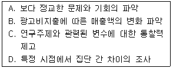
- A, C
- B, C
- B, D
- C, D
(정답률: 72%)
14. 표적집단면접법(focus group interview)에 관한 설명으로 가장 적합한 것은?
- 전문적인 지식을 가진 집단으로 하여금 특정한 주제에 대하여 자유롭게 토론하도록 한 다음, 이 과정에서 필요한 정보를 추출하는 방법이다.
- 응답자가 조사의 목적을 모르는 상태에서 다양한 심리적 의사소통법을 이용하여 자료를 수집하는 방법이다.
- 조사자가 한 단어를 제시하고 응답자가 그 단어로부터 연상되는 단어들을 순서대로 나열하도록 하여 조사하는 방법이다.
- 응답자에게 이해하기 난해한 그림을 제시한 다음, 그 그림이 무엇을 묘사하는지 물어 응답자의 심리 상태를 파악하는 방법이다.
(정답률: 83%)
15. 전화조사를 사용해야 할 때와 가장 거리가 먼 것은?
- 질문의 내용이 단순할 때
- 질문의 내용에 쉽게 응답할 수 있을 때
- 응답해야 할 문항이 많을 때
- 면접조사의 보조수단으로 사용할 때
(정답률: 83%)
16. 횡단연구(cross-sectional study)에 관한 설명으로 틀린 것은?
- 추세연구는 횡단연구의 일종이다.
- 인구센서스 조사는 횡단연구의 대표적인 예이다.
- 어느 한 시점에서 어떤 현상을 주의 깊게 연구하는 방법이다.
- 횡단연구로 인과적 관계를 규명하려는 가설검정이 가능하다.
(정답률: 74%)
17. 우편조사의 응답률에 영향을 미치는 요인과 가장 거리가 먼 것은?
- 응답집단의 동질성
- 응답자의 지역적 범위
- 독촉서신 등의 후속조치
- 연구주관기관 및 지원 단체의 성격
(정답률: 65%)
18. 조사연구의 일반적인 목적과 가장 거리가 먼 것은?
- 현상의 설명
- 현상의 학습
- 현상의 탐색
- 현상의 기술
(정답률: 84%)
19. A영양제의 효과를 패널조사 방법으로 8세 때부터 15년간 조사하였다. 이 과정에서 가장 문제시 될 수 있는 타당도 저해요인은?
- 통계적 회귀
- 시험효과
- 실험변수의 확산
- 성숙효과
(정답률: 80%)
20. 다음 질문항목의 문제점으로 가장 적합한 것은?
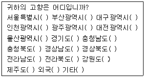
- 간결성
- 명확성
- 상호배제성
- 포괄성
(정답률: 64%)
21. 가설이 갖추어야 할 요건이 아닌 것은?
- 가설은 이론적으로 검증할 수 있어야 한다.
- 가설은 계량적인 형태를 취하거나 계량화할 수 있어야 한다.
- 가설의 표현은 간단명료해야 한다.
- 가설은 동일 분야의 다른 가설과 연관을 가져서는 안 된다.
(정답률: 88%)
22. 설문지에 사용하는 용어 선택 시 고려해야 할 사항을 모두 고른 것은?
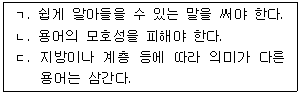
- ㄱ, ㄴ
- ㄱ, ㄷ
- ㄴ, ㄷ
- ㄱ, ㄴ, ㄷ
(정답률: 88%)
23. 사회조사에서 자료를 편집, 정정, 보완하거나 필요에 따라서 삭제하여야 할 필요성이 생겨나는 단계는?
- 문제설정단계(Problem statement stage)
- 자료수집단계(Data collection stage)
- 자료분석단계(Data analysis stage)
- 예비검사단계(Pilot test stage)
(정답률: 74%)
24. 설문지 내에서 개별질문들을 배치할 때 고려할 사항으로 틀린 것은?
- 응답자의 인적사항에 대한 질문은 설문지의 표지에 둔다.
- 응답자가 심각하게 고려하여 응답해야 하는 질문은 뒤쪽에 둔다.
- 앞의 질문이 다음 질문에 연상작용을 일으키는 질문은 서로 떨어뜨려 놓는다.
- 응답자가 쉽게 응답할 수 있는 질문은 앞부분에 둔다.
(정답률: 79%)
25. 두 개 이상의 구성개념 또는 변수간의 관계를 검정 가능한 형태로 서술한 문장으로써 과학적 조사에 의하여 검정이 가능한 사실을 말하는 것은?
- 패러다임(paradigm)
- 법(law)
- 가설(hypothesis)
- 이론(theory)
(정답률: 81%)
26. 실험의 기본적 요소와 가장 거리가 먼 것은?
- 독립변수와 종속변수의 설정
- 실험집단과 통제집단의 구분
- 사전검사와 사후검사의 실시
- 사후적 통제의 실시
(정답률: 72%)
27. 새로운 아이디어나 요인간의 관계를 파악하기 위한 탐색적 조사에 가장 적합한 질문유형은?
- 개방형 질문
- 다지선다형 질문
- 서열식 질문
- 어의차이형 질문
(정답률: 86%)
28. 설문지의 표지문(cover letter)에 포함될 내용으로 가장 거리가 먼 것은?
- 연구의 목적
- 연구의 중요성
- 연구의 예상결과
- 연구의 주관기관
(정답률: 88%)
29. 내용분석에 관한 설명으로 틀린 것은?
- 비개입적 연구이다.
- 표본추출은 하지 않는다.
- 코딩을 위해서는 개념화 및 조작화가 잘 이루어져야 한다.
- 책을 내용분석할 때 분석단위는 페이지, 단락, 줄 등이 가능하다.
(정답률: 59%)
30. 응답자의 잘못으로 생길 수 있는 편의(bias)와 가장 거리가 먼 것은?
- 예의를 찾는 데서 오는 편의
- 고의적 오도로 인한 편의
- 사회적으로 바람직한 대답을 하려는 데서 오는 편의
- 질문방식에서 오는 편의
(정답률: 69%)
2과목: 조사방법론 II
31. 동일한 개념에 대해 측정을 반복했을 때 동일한 측정값을 얻게 되는 정도는?
- 타당도
- 정확도
- 개념도
- 신뢰도
(정답률: 80%)
32. 층화(stratified)표본추출법에 관한 설명으로 틀린 것은?
- 모집단을 일정 기준에 따라 서로 상이한 집단들로 재구성한다.
- 동질적인 집단에서의 표집오차가 이질적인 집단에서의 오차보다 작다는데 논리적인 근거를 둔다.
- 비례층화추출법과 불비례층화추출법으로 구분할 수 있다.
- 집단간에 이질성이 존재하는 경우 무작위표본추출보다 정확하게 모집단을 대표하지 못하는 단점이 있다.
(정답률: 63%)
33. 특정한 구성개념이나 잠재변수의 값을 측정하기 위해 측정할 내용이나 측정방법을 구체적으로 정확하게 표현하고 의미를 부여하는 것은?
- 구성적 정의(constitutive definition)
- 조작적 정의(operational definition)
- 개념화(conceptualization)
- 패러다임(paradigm)
(정답률: 78%)
34. 표집을 위한 명단 배열에 일정한 주기성이 있는 경우 편중된 표본을 추출할 위험이 있는 표집방법은?
- 집락표집(cluster sampling)
- 판단표집(judgmental sampling)
- 층화표집(stratified sampling)
- 계통표집(systematic sampling)
(정답률: 63%)
35. 측정의 타당도에 대한 설명으로 옳은 것은?
- 조사자가 측정하고자 하는 것을 측정하였느냐 하는 것이다.
- 사전검사와 사후검사 간에 측정도구가 상이함으로써 나타나는 변화이다.
- 측정도구가 측정하고자 하는 현상을 일관성있게 측정하는 능력이다.
- 조사대상이 시간의 경과에 따라 생리적 또는 심리적으로 변화하는 것이다.
(정답률: 79%)
36. 변수와 측정수준의 연결이 옳은 것은?
- 직업분류 – 등간변수
- 회사 근무년수 - 명목변수
- 사회학과 졸업생 수 – 비율변수
- 복지지출의 국가간 순위 - 명목변수
(정답률: 81%)
37. 신뢰도 측정방법의 하나인 반분법에 관한 Spearman-Brown 공식의 가정으로 옳은 것은?
- 질문지 전체의 신뢰도는 반쪽의 신뢰도에 비해 높다.
- 측정도구가 개념적으로 다차원이어야 한다.
- 질문의 수가 짝수 개인 질문지가 홀수 개인 질문지보다 신뢰도가 낮다.
- 측정도구를 반으로 나누어 각각 종속적인 두 개의 척도를 사용한다.
(정답률: 45%)
38. 종교와 계급이라는 2개의 변수에서 각 변수에 4개의 범주를 두고(4종류의 종교 및 4종류의 계급) 표를 만들 때 칸들이 만들어진다. 각 칸마다 10가지 사례가 있다면 표본크기는?
- 8
- 16
- 80
- 160
(정답률: 64%)
39. 동일한 크기의 표본을 반복해서 추출했을 때 각 표본의 평균값이 어떻게 분포하는지를 보여주는 것은?
- 표집분포
- 평균분포
- 모집단분포
- 표집틀분포
(정답률: 44%)
40. 표본의 크기에 관한 설명으로 옳은 것은?
- 표본추출의 기준은 대표성과 밀접한 관련이 있다.
- 표본의 크기가 3배로 증가하면 오차는 1/3로 감소한다.
- 표본의 크기를 결정하는 내적 요인은 신뢰도와 모집단의 동질성이다.
- 모집단이 학생 600명, 회사원 400명으로 구성될 때, 이 모집단에서 100명을 표본추출하였다면 표집비율은 1/6, 1/4이다.
(정답률: 56%)
41. 이분변수(dichotomous variables)에 대한 설명과 가장 거리가 먼 것은?
- 특정한 속성의 유무에 따라 분류된다.
- 사상(事象)의 극단적 특성을 강조할 때 사용한다.
- 질적 변수를 다변량분석(multivariate analysis)에 포함시키기 위하여 변환할 때 사용한다.
- 연속변수(continuous variable)의 일종이다.
(정답률: 55%)
42. 척도에 관한 설명으로 틀린 것은?
- 척도는 계량화를 위한 도구이다.
- 척도의 중요한 속성은 연속성이다.
- 척도를 통해 모든 사물을 모두 측정할 수 있다.
- 척도는 일정한 규칙에 따라 측정대상에 표시하는 기호나 숫자의 배열이다.
(정답률: 74%)
43. 신뢰도의 안정성 기준과 관련된 것으로 동일한 개념을 두 시점에서 각각 측정하여 이들이 어느 정도 상관관계가 높은가를 보고 신뢰도를 평가하는 방법은?
- 내적 일관성법
- 반분법
- 재조사법
- 최소자승법
(정답률: 53%)
44. 거트만 척도에서 응답자의 응답이 이상적인 패턴에 얼마나 가까운가를 측정하는 것은?
- 스캘로그램
- 단일차원계수
- 최소오차계수
- 재생계수
(정답률: 56%)
45. 다음 ( )에 각각 알맞은 것은?
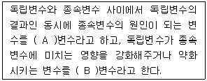
- A : 매개, B : 조절
- A : 조절, B : 매개
- A : 내생, B : 외생
- A : 외생, B : 내생
(정답률: 81%)
46. 표본조사와 전수조사의 관계에 대한 설명으로 틀린 것은?
- 표본조사의 전제가 되는 가정은 표본이 모집단을 적절히 대표한다는 것이다.
- 모수는 표본으로부터 얻어지는 양이고 통계량이란 모집단의 특성을 나타내는 양이다.
- 통계적인 모수추정이란 모수와 통계량을 연결하기 위한 절차이다.
- 가설검정이란 가설의 기각여부를 결정하는 것이다.
(정답률: 75%)
47. 모집단을 동질적인 특성을 가진 몇 개의 집단으로 구분하고 각 집단별로 표본을 추출하는 방법으로 모두 짝지은 것은?
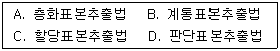
- A, B
- A, C
- B, D
- A, B, C
(정답률: 64%)
48. 일반적인 표본추출과정으로 옳은 것은?
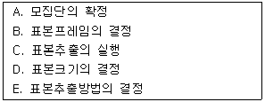
- A → B → E → D → C
- A → D → E → B → C
- A → D → B → E → C
- A → B → D → E → C
(정답률: 51%)
49. 실험에서 인과관계를 추론하기 위해서 서로 다른 값을 갖도록 처치를 하는 변수를 무엇이라고 하는가?
- 외적변수
- 종속변수
- 매개변수
- 독립변수
(정답률: 59%)
50. 점수 또는 척도가 일반화하려고 하는 개념을 어느 정도로 잘 반영해 주고 있는가를 의미하는 타당도는?(오류 신고가 접수된 문제입니다. 반드시 정답과 해설을 확인하시기 바랍니다.)
- 액면타당도
- 내용타당도
- 기준관련타당도
- 구성안타당도
(정답률: 54%)
51. 확률표집방법(probability sampling method)과 비확률표집방법(non-probability sampling method)에 관한 설명으로 틀린 것은?
- 확률표집방법은 구성원들의 명단이 기재된 표본틀(sample frame)이 있다.
- 확률표집방법은 조사대상이 뽑힐 확률을 미리 알아서 표본의 모집단 대표성을 산출할 수 있다.
- 비교적 정확한 표본 프레임의 입수가 가능하다면 확률표집방법보다는 비확률표집방법을 이용하는 것이 바람직하다.
- 비확률표집방법은 조사결과에 포함될 수 있는 오류에 대한 정확한 정보를 얻기 어렵다.
(정답률: 67%)
52. 측정의 비체계적 오차와 체계적 오차를 신뢰도, 타당도의 개념과 연결시켜 생각할 때, 타당도는 높으나 신뢰도가 낮은 경우는?
- 비체계적 오차와 체계적 오차가 모두 작을 경우
- 비체계적 오차가 크고 체계적 오차가 작을 경우
- 비체계적 오차가 작고 체계적 오차가 클 경우
- 비체계적 오차와 체계적 오차가 모두 클 경우
(정답률: 65%)
53. 사회적 거리척도로서 집단간 거리측정이 아니라 집단내 구성원간의 거리를 측정하는 방법은?
- Guttman 척도
- Sociometry
- Bogardus 척도
- Thurstone 척도
(정답률: 63%)
54. 각 문항이 척도상의 어디에 위치할 것인가를 평가자들로 하여금 판단케 한 다음 조사자가 이를 바탕으로 하여 대표적인 문항들을 선정하여 척도를 구성하는 방법은?
- 서스톤척도
- 리커트척도
- 거트만척도
- 의미분화척도
(정답률: 57%)
55. 한정된 모집단이 없고 참가자들이 계속 장소를 바꾸며 움직일 때, 사건이 일어나는 지역을 표집대상으로 삼고, 사람들을 표집하는 방법은?
- 시간표집법
- 공간표집법
- 구조표집법
- 임의표집법
(정답률: 61%)
56. 다음에서 설명하는 내적 타당도 저해요인으로 가장 적합한 것은?
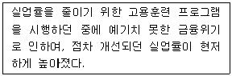
- 역사(history)요인
- 선발(selection)요인
- 성숙(maturation)요인
- 회귀(regression)요인
(정답률: 72%)
57. 층화무작위표본추출법과 군집표본추출법에 대한 설명으로 틀린 것은?
- 확률표본추출법이다.
- 모집단의 모든 요소가 추출될 확률이 동일하다.
- 표본추출의 단위가 모집단의 요소이다.
- 군집표본추출법은 층화무작위표본추출법과는 달리 가급적이면 군집내부는 이질적인 요소로 구성한다.
(정답률: 46%)
58. 표본추출(sampling)에 대한 설명으로 틀린 것은?
- 표본추출이란 모집단에서 표본을 선택하는 행위를 말한다.
- 표본을 추출할 때는 모집단을 분명하게 정의하는 것이 중요하다.
- 일반적으로 표본이 모집단을 잘 대표하기 위해서는 가능한 확률표본추출을 하는 것이 바람직하다.
- 확률표본추출을 할 경우 표본오차는 없으나 비표본오차는 발생할 수 있다.
(정답률: 75%)
59. 특정한 규칙에 따라 현상에 숫자를 부여하는 과정은?
- 검사
- 통계
- 척도
- 측정
(정답률: 68%)
60. 측정에 대한 설명과 가장 거리가 먼 것은?
- 관찰된 현상의 경험적인 속성에 대해 일정한 규칙에 따라 수치를 부여하는 것이다.
- 이론과 경험적 사실을 연결시켜 줌으로써 이론을 경험적으로 검증해주는 수단이다.
- 사회과학에서는 대상이 갖는 속성 자체보다는 속성의 지표를 측정하는 경향이 있다.
- 사회과학에서 태도와 동기 등은 직접 관찰가능하기 때문에 측정하기가 용이하다.
(정답률: 72%)
3과목: 사회통계
61. 다음 중 제1종 오류가 발생하는 경우는?
- 참이 아닌 귀무가설(H0)을 기각하지 않을 경우
- 참인 귀무가설(H0)을 기각하지 않을 경우
- 참이 아닌 귀무가설(H0)을 기각할 경우
- 참인 귀무가설(H0)을 기각할 경우
(정답률: 65%)
62. 두 변수 (X, Y)의 n개의 자료 (x1,y1), (x2, y2), …, (xn, yn)에 대하여 다음과 같이 정의된 표본상관계수 r에 대한 설명 중에서 틀린 것은?
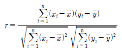
- 상관계수는 항상 -1 이상, 1이하의 값을 갖는다.
- X와 Y사이의 상관계수의 값과 (X+2)와 2Y사이의 상관계수의 값은 같다.
- X와 Y사이의 상관계수의 값과 -3X와 2Y사이의 상관계수의 값은 같다.
- 서로 연관성이 있는 경우에도 X와 Y사이의 상관계수의 값은 0이 될 수도 있다.
(정답률: 49%)
63. 모평균(μ)에 대한 검정을 수행할 때, 가설의 형태로 잘못된 것은?(오류 신고가 접수된 문제입니다. 반드시 정답과 해설을 확인하시기 바랍니다.)
- H0:μ≥μ0, H1:μ＜μ0
- H0:μ=μ0, H0:μ≠μ0
- H0:μ＞μ0, H1:μ ≤ μ0
- H0:μ≤μ0, H1:μ＞μ0
(정답률: 43%)
64. 4×5 분할표 자료에 대한 독립성검정에서 카이제곱 통계량의 자유도는?
- 9
- 12
- 19
- 20
(정답률: 69%)
65. 중소기업들 간 30대 직원의 연봉에 차이가 있는지 알아보기 위해 몇개의 기업을 조사한 결과 다음과 같은 분산분석표를 얻었다. 총 몇개 기업이 비교대상이 되었으며, 총 몇 명이 조사되었나?
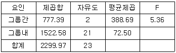
- 2개회사, 21명
- 2개회사, 22명
- 3개회사, 23명
- 3개회사, 24명
(정답률: 59%)
66. A와 B 두 사람이 같은 동전을 던지는 실험을 하였다. A는 100회 시행에서 앞면이 60번, B는 200회 시행에서 앞면이 90번 나왔다. 이 동전의 앞면이 나올 확률의 추정치는?
- 0.525
- 0.45
- 0.6
- 0.5
(정답률: 37%)
67. 모집단으로부터 추출한 크기가 100인 표본으로부터 구한 표본비율이
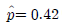
이다. 모비율에 대한 가설 H0:p=0.4 vs. H1:p＞0.4을 검정하기 위한 검정통계량은?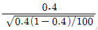
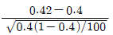
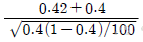
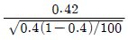
(정답률: 60%)
68. 봉급생활자의 근속년수, 학력, 성별이 연봉에 미치는 관계를 알아보고자 연봉을 반응변수로 하여 다중회귀분석을 실시하기로 하였다. 연봉과 근속년수는 양적변수이며, 학력(고졸이하, 대졸, 대학원 이상)과 성별(남, 여)은 질적변수일 때, 다중회귀모형에 포함되어야 하는 가변수(dummy variable)의 수는?
- 1
- 2
- 3
- 4
(정답률: 51%)
69. 항아리에 파란공이 5개, 빨간공이 4개, 노란공이 3개 들어 있다. 이 항아리에서 임의로 1개의 공을 꺼낼 때 빨간공일 확률은?
- 1/3
- 1/4
- 1/5
- 1/6
(정답률: 69%)
70. 두 집단의 자료 간 산포를 비교하는 측도로 적절하지 않은 것은?
- 분산
- 표준편차
- 변동계수
- 표준오차
(정답률: 56%)
71. 다음 중 첨도가 가장 큰 분포는?
- 표준정규분포
- 평균=0, 표준편차=10인 정규분포
- 평균=0, 표준편차=0.1인 정규분포
- 자유도가 1인 t분포
(정답률: 39%)
72. 6면 주사위의 각 눈이 나타날 확률이 동일한지를 알아보기 위하여 주사위를 60번 던진 결과가 다음과 같다. 다음 설명 중 잘못된 것은?
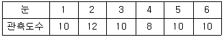
- 귀무가설은 “각 눈이 나올 확률은 1/6이다”이다.
- 카이제곱 동질성검정을 이용한다.
- 귀무가설 하에서 각 눈이 나올 기대도수는 10이다.
- 카이제곱 검정통계량 값은 0.8이다.
(정답률: 41%)
73. 단순 선형회귀모형 y=α+βx+e을 적용하여 주어진 자료들로부터 회귀직선을 추정하고 다음과 같은 분산분석표를 얻었다.
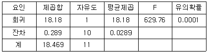
이 때 추정에 사용된 자료수와 결정계수는?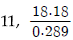
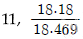
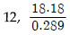
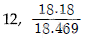
(정답률: 55%)
74. 회귀분석에서 결정계수(R2)에 관한 설명으로 옳은 것은?
- 결정계수로부터 상관계수를 알 수 있다.
- 종속변수가 독립변수를 몇 %나 설명할 수 있는지를 나타낸다.
- 추정된 회귀식이 유의한지를 판단하는 유일한 기준치이다.
- 독립변수가 종속변수를 몇 %나 설명할 수 있는지를 나타낸다.
(정답률: 38%)
75. 이항분포 B(n,p)의 정규 근사 조건으로 옳은 것은?
- n ≤ 30
- np ≤ 5, n(1-p) ≥ 5
- np ≥ 5, n(1-p) ≥ 5
- np ≥ np(1-p)
(정답률: 48%)
76. 두 사건 A 와 B 에 대한 확률의 법칙 중 일반적으로 성립하지 않는 것은?
- P(A)=P(A∩B)+P(A∩BC)
- P(A∪B)=P(A)+P(B)-P(A)ㆍP(B|A)
- P(A∪AC)=1
- P(A∩B)=P(A)ㆍP(B)
(정답률: 58%)
77. 다음 설명 중 틀린 것은?
- 평균은 각 자료에서 유일하게 얻어진다.
- 중앙값은 평균보다 극단값에 의해 영향을 더 많이 받는다.
- 최빈값은 하나 이상 얻어질 수도 있다.
- 표준편차의 단위는 원자료의 단위와 일치한다.
(정답률: 66%)
78. 자료의 위치를 나타내는 측도로 알맞지 않은 것은?
- 중앙값
- 백분위수
- 표준편차
- 사분위수
(정답률: 58%)
79. 10대 청소년 480명을 대상으로 인터넷 사용 시 가장 많이 이용하는 서비스가 무엇인지를 조사하여 다음의 결과를 얻었다. 서비스 이용 빈도 간에 서로 차이가 없다는 귀무가설을 검정하기 위한 카이제곱 통계량의 값과 자유도는?
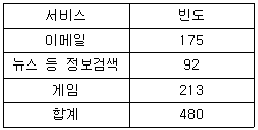
- 카이제곱 통계량 = 136.1235 자유도 = 2
- 카이제곱 통계량 = 136.1235 자유도 = 3
- 카이제곱 통계량 = 47.8625 자유도 = 2
- 카이제곱 통계량 = 47.8625 자유도 = 3
(정답률: 48%)
80. 다음은 서로 다른 3가지 포장방법(A, B, C)의 선호도가 같은지를 90명을 대상으로 조사한 결과이다. 선호도가 동일한지를 검정하는 카이제곱 검정통계량의 값은?
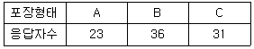
- 2.87
- 2.97
- 3.07
- 4.07
(정답률: 48%)
81. 일원분산분석에 관한 설명으로 틀린 것은?
- 3개의 모평균을 비교하는 검정에서 일원분산분석을 사용할 수 있다.
- 서로 다른 집단 간에 독립을 가정한다.
- 분산분석의 검정법은 t-검정이다.
- 각 집단별 자료의 수가 다를 수 있다.
(정답률: 54%)
82. 토산품점에 들리는 외국인 관광객 1인당 평균구매액을 추정하려한다. 10명의 고객을 랜덤추출하여 조사한 결과 표본 평균이 $4000이었다. 모집단의 분포를 정규분포라 가정할 때, 모평균에 대한 95% 신뢰구간은? (단, 모 표준편차는 $300이라 알려져 있다.)
- (3878, 4122)
- (3844, 4156)
- (3814, 4186)
- (3800, 4180)
(정답률: 53%)
83. 어느 기업의 신입직원 월급여가 평균이 2백만원, 표준편차는 40인 정규분포를 따른다고 하자. 신입직원들 중 100명의 표본을 추출할 때, 표본평균의 분포는?
- N(2백만, 16)
- N(2백만, 160)
- N(2백만, 400)
- N(2백만, 1600)
(정답률: 53%)
84. 대기오염에 따른 신체발육정도가 서로 다른지를 알아보기 위해 대기오염상태가 서로 다른 4개 도시에서 각각 10명씩 어린이들의 키를 조사하였다. 분산분석의 결과가 다음과 같을 때, 다음 중 틀린 것은?
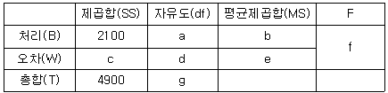
- b=700
- c=2800
- g=39
- f=8.0
(정답률: 58%)
85. 다음 회귀방정식을 통해 30세의 경상도출신으로 대학을 졸업한 남자의 연소득을 추정하면?
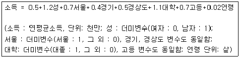
- 2500만원
- 3100만원
- 3900만원
- 4600만원
(정답률: 51%)
86. 자료에 대한 산점도를 통해 파악할 수 없는 것은?
- 선형 또는 비선형 관계의 여부
- 이상점의 존재 여부
- 자료의 군집 형태
- 정규성 여부
(정답률: 40%)
87. 가설검정에 관한 설명으로 틀린 것은?
- 귀무가설이 참임에도 불구하고 귀무가설을 기각했을 때 제1종 오류(type Ierror)가 일어났다고 한다.
- 유의확률이 유의수준보다 작으면 귀무가설을 기각한다.
- 검정력은 대립가설이 참일 때, 귀무가설을 기각할 확률을 말한다.
- 검정통계량의 관측값이 기각역에 속하면 대립가설을 기각한다.
(정답률: 53%)
88. 공정한 주사위를 20번 던지는 실험에서 1의 눈을 관찰한 횟수를 확률변수 X라 하자. 정규근사를 이용하여 P(X≥4)의 근사값을 구하려 한다. 다음 중 연속성 수정을 고려한 근사식으로 옳은 것은? (단, Z는 표준정규분포를 따르는 확률변수)
- P(Z≥0.1)
- P(Z≥0.4)
- P(Z≥0.7)
- P(Z≥1)
(정답률: 29%)
89. 평균이 70이고 표준편차가 5인 정규분포를 따르는 집단에서 추출된한 개체의 관찰값이 80이었다고 하자. 이 개체의 상대적 위치를 나타내는 표준화점수는?
- 2
- -2
- 2.5
- 0.025
(정답률: 57%)
90. 평균이μ이고 분산이 16인 정규모집단으로부터 크기가 100인 확률표본의 평균을
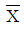
라 하자. 가설 H0:μ=8 vs. H1:μ=6.416의 검정을 위하여 기각역을 ＜7.2로 할 때, 제1종 오류와 제2종 오류를 범할 확률은?- 제1종 오류를 범할 확률 0.⑤, 제2종 오류를 범할 확률 0.025
- 제1종 오류를 범할 확률 0.023, 제2종 오류를 범할 확률 0.025
- 제1종 오류를 범할 확률 0.023, 제2종 오류를 범할 확률 0.⑤
- 제1종 오류를 범할 확률 0.⑤, 제2종 오류를 범할 확률 0.023
(정답률: 46%)
91. 어떤 도시의 특정 정당 지지율을 추정하고자 한다. 지지율에 대한 90% 추정오차한계가 5% 이내이도록 하려면 표본의 크기는? (단, Z가 표준정규분포를 따르는 확률변수일 때, P(Z≤1.645)=0.95, P(Z≤1.96)=0.975, P(Z≤0.995)=2.576이다.)
- 68
- 271
- 385
- 664
(정답률: 52%)
92. 다음은 일원분산분석을 실시한 결과이다. 결과에 대한 해석으로 틀린 것은?
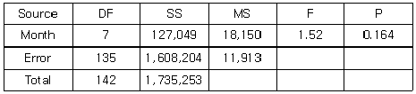
- 총 관측자료수는 142개이다.
- 인자는 Month로서 수준 수는 8개이다.
- 유의수준 0.⑤에서 인자의 효과가 인정되지 않는다.
- 오차항의 분산 추정값은 11913이다.
(정답률: 52%)
93. 다음 통계량 중 그 성질이 다른 것은?
- 분산
- 범위
- 변이(변동)계수
- 상관계수
(정답률: 37%)
94. 설명변수(X)와 반응변수(Y)사이에 단순회귀모형을 가정할 때, 결정계수는?
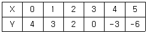
- 0.2⑤
- 0.555
- 0.745
- 0.946
(정답률: 28%)
95. 어느 대학교에서 학생들을 대상으로 4개의 변수(키, 몸무게, 혈액형, 월평균 용돈)에 대한 관측값을 얻었다. 이들 변수 중 관측값들을 대표하는 측도로 최빈값(mode)을 사용하는 것이 가장 적합한 것은?
- 키
- 몸무게
- 혈액형
- 월평균 용돈
(정답률: 70%)
96. 흰색 공 2개, 검은색 공 3개가 들어있는 상자에서 2개의 공을 임의로 선택할 때, 확률변수 X를 선택된 2개 중에서 흰색 공의 수라 하자.X의 기댓값은?
- 3/5
- 4/5
- 1
- 6/5
(정답률: 42%)
97. 자동차 보험의 가입자가 보험금 지급을 청구할 확률은 0.2라 한다. 200명의 가입자 중 보험금 지급을 청구하는 사람의 수를 X라 할 때,X의 평균과 분산은?
- 40, 16
- 40, 32
- 16, 40
- 16, 32
(정답률: 69%)
98. 상관계수에 대한 설명으로 틀린 것은?
- 두 변수의 직선관계를 나타내는 척도이다.
- 상관계수는 -1에서 1 사이의 값을 갖는다.
- 상관계수가 0에 가깝다는 의미는 두 변수간의 연관성이 없다는 의미이다.
- 상관계수 값이 1이나 -1에 가깝다는 의미는 두 변수간의 강한 연관성을 가지고 있다는 의미이기도 하다.
(정답률: 50%)
99. 어떤 학생이 통계학 시험에 합격할 확률은 2/3이고, 경제학 시험에 합격할 확률은 2/5이다. 또한 두 과목 모두에 합격할 확률이 2/3이라면 적어도 한 과목에 합격할 확률은?(오류 신고가 접수된 문제입니다. 반드시 정답과 해설을 확인하시기 바랍니다.)
- 1/5
- 2/5
- 3/5
- 4/5
(정답률: 16%)
100. 공정한 1개의 동전을 6회 던져서 앞면이 나타난 횟수를 X라 할 때, X의 평균과 분산은?
- 평균 : 3.0, 분산 : 1.25
- 평균 : 3.0, 분산 : 1.50
- 평균 : 2.5, 분산 : 1.25
- 평균 : 2.5, 분산 : 1.50
(정답률: 64%)